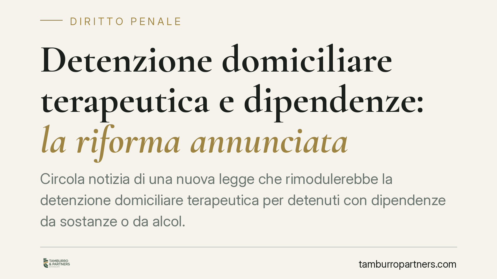
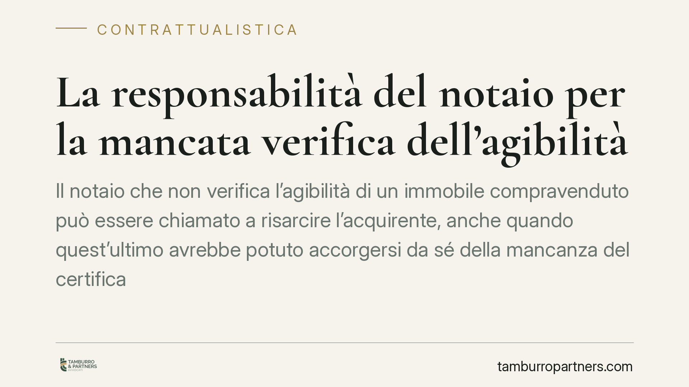
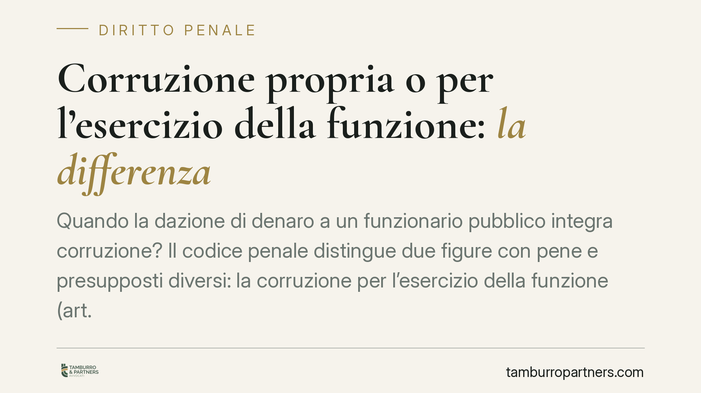
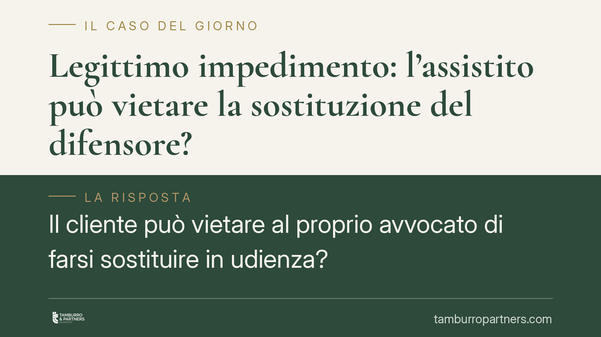
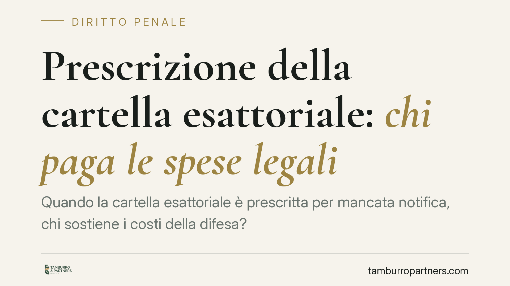
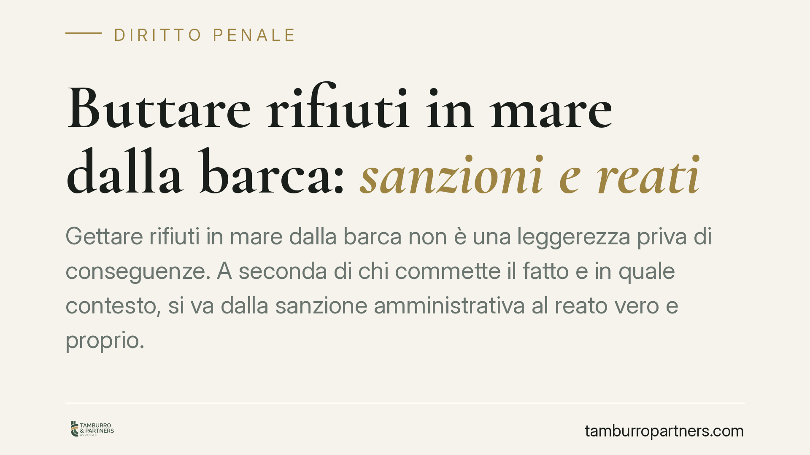
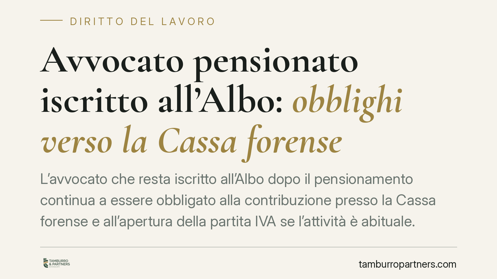
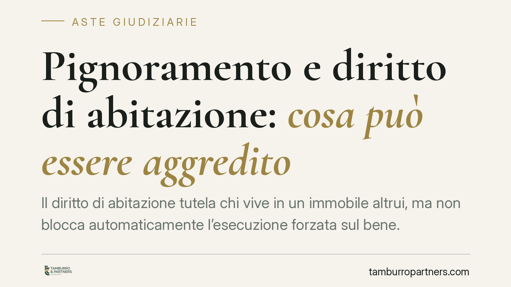

Pergolato o tettoia? Quando scatta l'abuso edilizio penalmente rilevante
Coprire un pergolato con elementi fissi lo trasforma in tettoia. Cambia la qualificazione dell'opera e, con essa, il titolo edilizio necessario: dal semplice pergolato liberalizzat…

Espulsione dello straniero e legami familiari: quando il diritto alla vita privata prevale
La Cassazione penale torna sul rapporto tra espulsione dello straniero condannato e tutela della vita familiare. Anche in presenza di una condanna, l'allontanamento non è automatic…

Cartella INPS o INAIL: chi va citato in giudizio per l'opposizione
Chi riceve una cartella per contributi INPS o premi INAIL non contestati deve sapere una cosa: il soggetto da chiamare in giudizio non è l'agente della riscossione, ma l'ente credi…

Notifica a mano al figlio minorenne convivente: quando è valida
La Cassazione ribadisce che la notifica di un atto giudiziario è valida anche se ricevuta dal figlio minorenne convivente, purché abbia almeno quattordici anni. Non serve che l'att…

Sequestro dello smartphone senza mandato: limiti e garanzie
La polizia giudiziaria può sequestrare uno smartphone in via d'urgenza senza attendere il provvedimento del giudice. La Cassazione conferma la legittimità del sequestro, ma solo se…

Detenzione domiciliare terapeutica e dipendenze: la riforma annunciata
Circola notizia di una nuova legge che rimodulerebbe la detenzione domiciliare terapeutica per detenuti con dipendenze da sostanze o da alcol. Il dato normativo, allo stato, non ri…

La responsabilità del notaio per la mancata verifica dell'agibilità
Il notaio che non verifica l'agibilità di un immobile compravenduto può essere chiamato a risarcire l'acquirente, anche quando quest'ultimo avrebbe potuto accorgersi da sé della ma…

Corruzione propria o per l'esercizio della funzione: la differenza
Quando la dazione di denaro a un funzionario pubblico integra corruzione? Il codice penale distingue due figure con pene e presupposti diversi: la corruzione per l'esercizio della …

Legittimo impedimento: l'assistito può vietare la sostituzione del difensore?
Il cliente può vietare al proprio avvocato di farsi sostituire in udienza? Secondo un recente arresto della Corte di Cassazione, no: la mancata autorizzazione dell'assistito non tr…

Prescrizione della cartella esattoriale: chi paga le spese legali
Quando la cartella esattoriale è prescritta per mancata notifica, chi sostiene i costi della difesa? La Corte di cassazione ribadisce che l'ente impositore soccombente deve rimbors…

Buttare rifiuti in mare dalla barca: sanzioni e reati
Gettare rifiuti in mare dalla barca non è una leggerezza priva di conseguenze. A seconda di chi commette il fatto e in quale contesto, si va dalla sanzione amministrativa al reato …

Avvocato pensionato iscritto all'Albo: obblighi verso la Cassa forense
L'avvocato che resta iscritto all'Albo dopo il pensionamento continua a essere obbligato alla contribuzione presso la Cassa forense e all'apertura della partita IVA se l'attività è…

Pignoramento e diritto di abitazione: cosa può essere aggredito
Il diritto di abitazione tutela chi vive in un immobile altrui, ma non blocca automaticamente l'esecuzione forzata sul bene. Ciò che conta è la cronologia delle trascrizioni: se il…
Quando si apre la successione ereditaria: momento, effetti e adempimenti
La successione ereditaria si apre nel momento esatto della morte, nel luogo dell'ultimo domicilio del defunto. È un principio semplice, ma da quell'istante decorrono termini, obbli…
Usufrutto legale dei genitori sui beni dei figli minori: cosa possono e non possono fare
I genitori non sono padroni del patrimonio dei figli minori. Il Codice civile riconosce loro un usufrutto legale sui beni del minore, ma lo vincola a precise finalità: mantenimento…

Coniugi separati con la stessa residenza: possono presentare ISEE diversi?
La separazione legale, da sola, non basta per ottenere due ISEE distinti. Se i coniugi conservano la medesima residenza anagrafica, l'INPS li considera un unico nucleo familiare. L…

Cedere gratuitamente i diritti su un'opera letteraria: regole e limiti
L'autore può cedere gratuitamente i diritti economici sulla propria opera letteraria, ma la legge impone cautele precise. Serve un contratto scritto per provare la cessione, restan…

Caduta in moto per il brecciolino sulla strada: chi risarcisce?
Cade il motociclista sul brecciolino non rimosso dalla carreggiata: chi ne risponde? L'orientamento consolidato della Cassazione riconosce la responsabilità dell'ente gestore della…

Interrogatorio preventivo e coindagati: quando la misura cautelare è viziata
L'interrogatorio preventivo introdotto dalla riforma Nordio anticipa il contraddittorio prima dell'applicazione di alcune misure cautelari. Si discute se l'omissione dell'atto nei …

Circonvenzione di incapace: presupposti e conseguenze penali
La circonvenzione di incapace punisce chi approfitta della fragilità psichica altrui per ottenere un vantaggio patrimoniale. È un reato che tocca famiglie, donazioni sospette e tes…

Mantenimento per figli già autonomi: quando è ripetibile
Un genitore continua a versare il mantenimento per figli che hanno raggiunto l'indipendenza economica. Le somme sono ripetibili? Una recente pronuncia del Tribunale di Catania affr…

Assegno unico e figli di frontalieri UE: cade il requisito di residenza
L'INPS rivede l'accesso all'assegno unico e universale per i figli dei lavoratori europei che operano in Italia, superando l'ostacolo del requisito di residenza. La misura, secondo…

Il giudice può vietare l'uso dei social network?
Insulti, diffamazioni, molestie e diffusione di immagini private passano ogni giorno dai social. Da qui una domanda ricorrente: il giudice può vietare a qualcuno di usare Facebook,…

Divieto di rientro post-terremoto: come reagire quando il Comune blocca l'accesso all'immobile
Dopo un terremoto il Comune può vietare l'accesso agli edifici pericolanti. Ma il divieto non può durare all'infinito senza verifiche aggiornate. Quando l'inagibilità si trasforma …

Annullamento e impugnazione dell'accettazione dell'eredità: quando è possibile
Accettare un'eredità è un atto definitivo, ma non irreversibile in senso assoluto. Il codice civile ammette l'annullamento in casi tassativi: violenza e dolo. Un rimedio distinto o…

Casa di famiglia dopo il divorzio: cosa accade se l'ex si risposa e muore
Dopo il divorzio la casa acquistata in comunione legale resta di entrambi al 50%. Ma se l'ex marito si risposa e poi muore, chi eredita la sua quota? E la prima moglie mantiene qua…

Maltrattamenti in famiglia: quando basta la violenza psicologica
Minacce, umiliazioni ripetute e controllo ossessivo possono integrare il reato di maltrattamenti familiari anche in assenza di violenza fisica. Lo conferma la giurisprudenza di leg…

I mezzi di prova nel processo penale: cosa sono e come funzionano
Nel processo penale italiano la prova non è libera: la legge stabilisce quali strumenti conoscitivi il giudice può usare e come devono formarsi. Capire la differenza tra mezzi di p…

Baby gang e minorenni: cosa cambia con il pacchetto sicurezza
Il tema delle cosiddette baby gang è tornato al centro del dibattito con il pacchetto sicurezza. Prima di allarmarsi conviene distinguere ciò che è già norma vigente da ciò che res…

Bonifico ricevuto per errore e speso: si rischia una denuncia penale?
Un accredito inaspettato sul conto non è una fortuna. Chi trattiene e spende un bonifico arrivato per errore non commette più il reato previsto dall'art. 647 c.p., abrogato dal d.l…